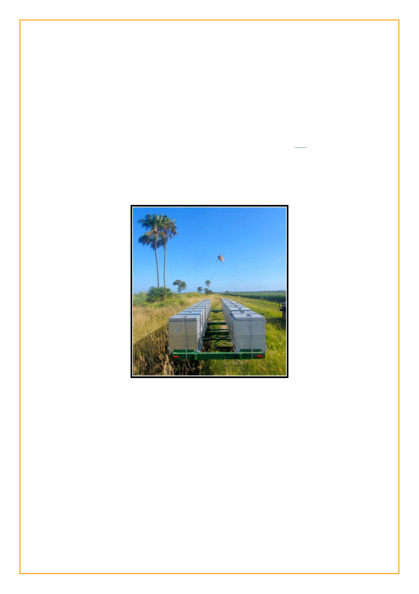

LJ Idol: Exhibit A (the first “mini season”)
The sun, quite impertinently, refuses to
set over the ocean here. Instead it hides its
colorful daily finale behind the tangled
branches of mangroves and eucalypts.
Not one to be out-witted by a giant ball
of gas, I like to swim out beyond the waves and
watch the sun set from there. Despite the warm
summer breeze (yes, in January), the water is
still often warmer than the air in the evening,
and the only hard part is getting out. That and
sea monsters.
Eventually the sky fades through ever
darker blues to black and a stunning array of
stars come out. The strange constellations I’m
not familiar with still sort of boggle my mind.
Huge “flying fox” bats flit about the sky as I
reluctantly leave the water and walk the 100
yards to my house.
I’ve tried to catch
the sun by getting up early
enough for sunrise, but the
wily bastard actually rises
over a headland which
curves out into the Coral
Sea, so the sun rises and
sets without ever touching
the water.
By 06:30 when I’m
headed to work it’s usually
already too hot for hot
coffee. I stop by the bakery
every morning to get
something for breakfast
and ask the girl there how
she is. She always
responds with “thanks,” and that’s pretty much
the end of that conversation. I tried to suggest
she put coffee in the fridge for iced coffee once
but she looked at me like I had antlers. During
the rest of my day I likely won’t talk to anyone.
My phone won’t ring (I couldn’t tell you offhand
what the ringer sounds like), and if I receive
any texts they’re invariably a “special offer!”
from telstra.
I work out among the cane fields. The
sugarcane walls you in like you’re in a hedge
maze. It looks kind of like giant grass, like
perhaps you’ve been shrunk to the size of a bee.
Then they burn it and cut it and suddenly you’re
in open space ... for a few more weeks until it’s
back to where it was. In some places the fields
are bordered by impassably thick forest, in
which insects make this constant loud buzz like
high tension wires. Birds make the weirdest
calls, including one that sounds so much like
someone whistling for your attention that I still
turn around every time. Sometimes a four foot
long goanna lizard will saunter out of the scrub
to give me a wry look.
I manage just over 500 beehives on a
large farm. Commercial beekeeping smells of
diesel and is caked mud on your boots. It is
hard work in the hot sun. It is working for
crotchety salty bosses as you slowly become
one yourself. And yes, it is getting stung. A lot.
Sometimes the sun is already setting by
the time I’m headed home. I swear it’s bigger
here than anywhere else. Around 5pm, already
the forests are bathed in a warm golden light
slanting in from the side. The sun sets over the
sea of sugarcane as a giant orangish-red
fireball. Sometimes I
emerge from the
corrugated metal
extracting shed for a
breath of fresh air and find
the world illuminated by
the moon as if by a
floodlight, and I
contemplate that 100 years
ago I might have seen the
exact same scene.
At night the narrow
muddy tracks amid the
cane truly do feel like a
labyrinth.
When I get home, if
I’ve missed the sun set, I
frequently walk on the
beach anyway. Not infrequently I can see
lightning flashing silently on the horizon.
I walk back to the house and dial up the
internet with my broadband modem, but
everyone I know is already long asleep. All too
often there aren’t even any interesting emails. I
had a housemate who drank himself into
oblivion every night, but now he’s gone and I
have the house to myself. My predecessor in
this job had to leave after he lost his eye and
half his sanity. I’m told he’s still sighted “in
town” on occasion, randomly, like a restless
ghost.
Sometimes I think I’ve got it pretty good.
Sometimes I think I might be in hell.